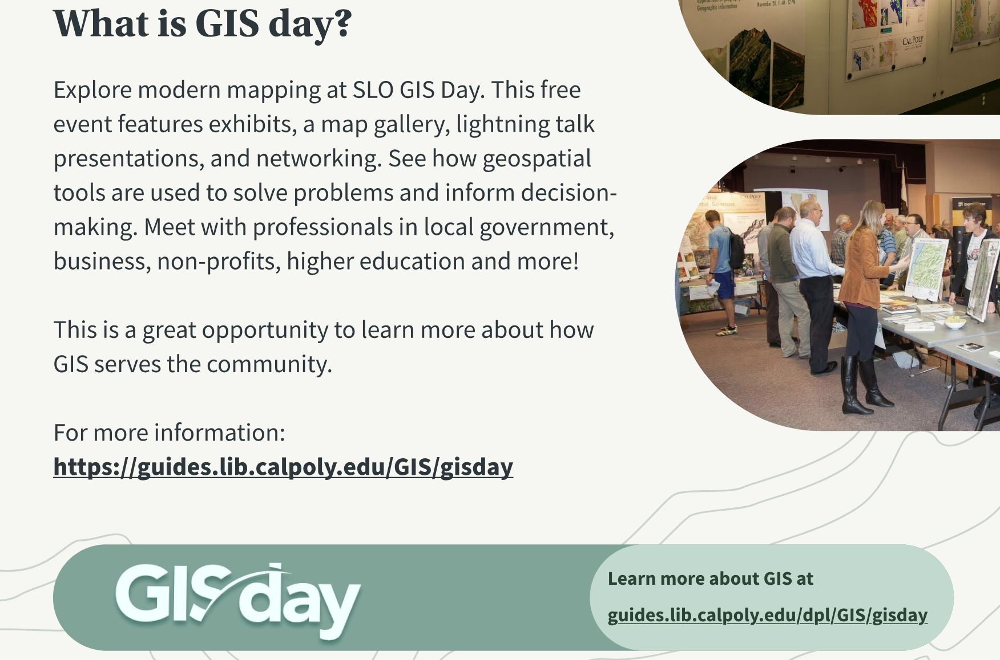

File Organization and Computer Hygiene
Be kind to your future self - keep your files organized:
- Use directories (a.k.a folders)
- Use descriptive names:
- e.g.
slo_county_26910.geojsonnotcounty.geojson
- e.g.
- Don’t put spaces in file or directory names (see this)


This applies to QGIS as well.
Final Project: Data & Processing Examples
- Sample data table structure:

| Variable | Resolution | Source | File name |
|---|---|---|---|
| Precipitation | 1 km | USGS (2023) | precip_2025.tif |
| Landcover | 30 m | NASA (2015) | lancover.tif |
| Streams | NA | USDA (2024) | streams.geojson |
Final Project Tips: Time Dimension
- Choose comparison windows that match your phenomenon (e.g., pre/post fire, seasonal contrasts).
- Temporal analyses reveal dynamics in hydrology, vegetation, ocean conditions, and more.

Final Project Resources
- Export QGIS attribute tables to Excel for quick charts and summaries.
- Browse high-quality exemplars on Canvas.
- Support network:
- Digital Projects Lab peer assistants — book time
- Instructor office hours (Mon/Wed 12–1 pm)
- Haley, classmates, ChatGPT, and the broader web.
- Curated dataset list: Potential datasets spreadsheet.

Debugging GIS Workflows
- Translate cryptic error messages into keywords for Google, StackExchange, or ChatGPT.
- Describe what you were doing when the problem appeared; context helps others help you.
- Step away briefly—fresh eyes solve many stubborn issues.
- Collaborate; many GIS puzzles are easier as a team.

Tutorial: Export QGIS Data to Excel
- Open the Swanton dataset in QGIS.
- Right-click
sprLandUse→Export→MS Office Open XML spreadsheet (XLSX). - Save the file to an accessible location (e.g., Desktop or OneDrive).

Excel Basics: Sort & Filter
- Use the funnel icon to enable filters on each column header.
- Sort ascending/descending and filter categories to explore the dataset.
- Observe how filtering impacts downstream calculations.

Excel Analysis: Summaries & Charts
- Build mini-tables to compute metrics (e.g., % land area by use).
- Highlight data →
Insert→Chartto visualize (pie, column, etc.). - Format data labels and legends for clarity.

Excel Analysis: Histograms
- Highlight the
Acrescolumn →Insert→Chart→Histogram. - Adjust bin width to reveal distribution patterns and outliers.

Continuing GIS at Cal Poly
- Enjoying the course? Explore additional geospatial classes and consider the GIS minor.
- Engage in GIS-related research with faculty or campus partners.

GIS Minor Requirements (Highlights)
| Course | Title | Units |
|---|---|---|
| BRAE 150 | Design Graphics and CAD for Agricultural Engineering | 2 |
| BRAE 239 | Engineering Surveying | 4 |
| BRAE 345 | Aerial Photogrammetry and Remote Sensing | 3–4 |
| GEOG 328 | Applications in Remote Sensing and GIS (option) | 3–4 |
| NR/LA 218 or GEOG 218 | Intro / Applications in GIS | 3–4 |
| NR 418 or GEOG 441 | Applied / Advanced Geospatial Technologies | 3–4 |

Break?
Take a moment to reset—hydrate, stretch, and prepare for ArcGIS Pro.

New Material: ArcGIS Pro Overview
- ESRI’s enterprise GIS platform; widely used in government and large nonprofits.
- Feature-rich and user-friendly but proprietary, Windows-only, and licensed.
- Fewer plugins/community resources compared to QGIS; plan support accordingly.

Tutorial: ArcGIS Pro Setup
- Launch ArcGIS Pro from the Start menu.
- Download
SwantonGIS.gdb.zipfrom Canvas and extract it. - In ArcGIS Pro:
Map→Add Data→ browse to the unzipped GDB. - Drag layers from the geodatabase into the map.

ArcGIS Pro: Symbology
- Category symbology: right-click layer (e.g.,
sprVegetation) →Symbology→Unique Values→ choose field (Vegtype1). - Graduated styling: experiment with numerical fields (
sprSoils):Graduated ColorswithKFACTOR.Graduated SymbolswithDepth.Proportional SymbolswithSlopeMax.

Project 4 Overview (Due 11/20)
- Goal: select the optimal Swanton Ranch site for one option:
- Student housing, Hemp farm, or Helicopter landing.
- Produce a report explaining site selection criteria and analysis.
- Work in groups of 2–3; coordinate today and check in if you need a team.